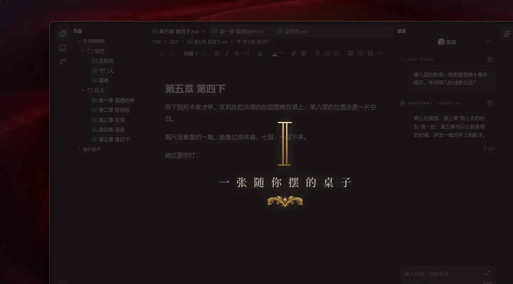
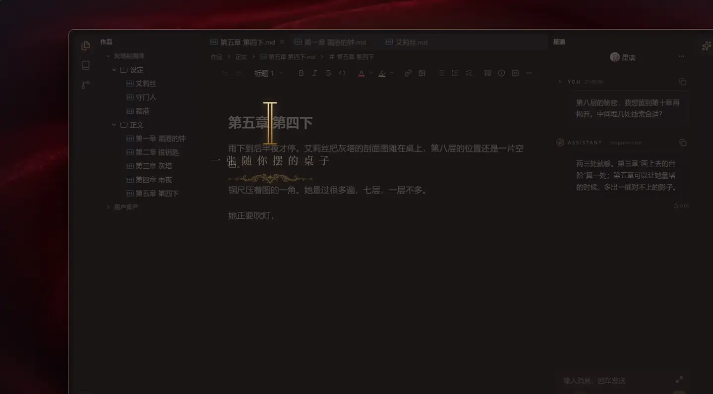
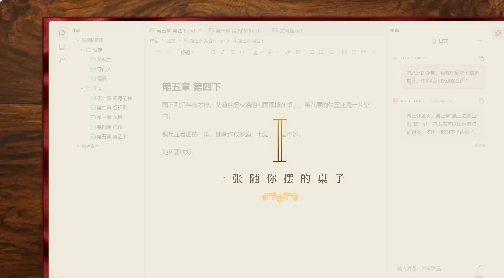

产品介绍首页：入殿·俯案成界（第 14 轮）
照第 13 轮之后会话里的三条与第 13 轮的答复：第一幕也落印开场；滚动一次最多走到下一站，不再一下越过第一幕；第二幕最后交给你的那一段删掉了。白天的红布与书桌下一轮出候选。
第一幕这样落印开场，可以吗？
推荐：这样可以。和第二幕同一套“沉幕落印”，两幕开场一个样子，看得出是一部戏的两幕；第一幕不换工作台，只描 I。


俯冲落地时放，约 1.65 秒：薄暮，金线描出 I 与这一幕的名字，再收进眉题里的“第一幕”上，眉题与章节条显出来，第一幕开演。拉回首屏再落地时再放一遍；从第二幕滚回来不放。
滚动这样分站，可以吗？
推荐：这样可以。手感还是原生的滚动，俯冲停在半路也能看；一次滚动越不过一站，就跳不过第一幕。“自己滑到下一站”会接管你的滚轮，想停在半路看俯冲时停不住。
| 从哪开始滚 | 往下，一次最多到 | 往上，一次最多到 |
|---|---|---|
| 首屏，或俯冲到一半 | 第一幕落地 | 首屏 |
| 第一幕 | 第二幕 | 首屏 |
| 第二幕 | 不拦，往下是下一节 | 第一幕 |
- “一次”是中间停顿不到 0.24 秒的一串滚动：滚轮连转、触控板一甩连同它的余势、按住方向键，都算一次。停一下再滚，才往下一站走。
- 拦住的地方舞台都钉着不动，看不出拦了一下。点“接着看编辑器”这类按钮滚过去不拦；窄屏不俯冲，也不拦。
- 试过浏览器自带的滚动吸附（无头浏览器里用合成的滚轮试）：一下大滚轮照样越过两站，一串小步滚动每一步都被吸回原处、滚不动，没用。
直接改了，不用答
| 改了什么 | 为什么 |
|---|---|
| 第二幕最后交给你的那一段删掉了：演完停在“还是原文”的结论上，章节条五段补满 | 第 13 轮的答复：“不要有用户做不出来的操作，最后那个你来做环节删掉” |
| 演完把焦点从工作台里拿出来（第一幕交给你时、第二幕演完时） | 演示打过字，焦点还留在正文里，按空格、方向键想翻页会打进正文 |
| 落印放到一半拉回首屏或滚进第二幕，印当场收走 | 镜头往回拉时印还压在工作台的位置上，等它放完会悬在首屏上 |
| 第五拍换编辑器：另开了 t07，先给产品的标签右键菜单加上“用其它编辑器重新打开”，加好以后照脚本演右键；这之前第五拍照旧直接换 | 第 13 轮的答复（先给产品加上这一项） |
| 白天落印的副题换成深墨色，金换成深一些的古金（下图） | 白天的薄暮是浅色的，原来的浅色副题压在上面几乎看不见（第二幕的落印也是） |

已定
- 首页给搜索进来的人，做得像产品介绍；书庭这类页面另做、自由发挥（2026-11-26）
- 截图尽量少：直接把工作台复原，让人体验到拖动、分屏与布局动画的丝滑（第 1 轮）
- 第一屏把介绍说明白，同时要有高级精美的动画，让人想往下滚；往下滚进入滚动动画（第 1 轮）
- 基调取 w00050 t06 契约仪式页的史诗、神圣、西幻气氛，不复制；现有的 NovelAI 场景图不直接用（2026-11-26）
- 要讲的功能：写作与编辑器、世界引擎、剧情（在做）、星璃与 Agent、本地与开源、插件与 SDK、桌面版、模型自选；llmlint 不列（2026-11-26）
- 先做方向一《入殿·俯案成界》；材质可以用生成的贴图，首页可以用星璃的立绘与贴纸（2026-11-26）
- 首屏方向不变、先打磨材质；按钮加金边一类的装饰，往皇室奢华感走；工作台缺省夜间配色、可以切换（第 4 轮）
- 第一幕放慢讲清楚，加回浮窗、视图换位置、关掉再打开，和首屏一样华丽（第 4 轮与会话）
- 首句用 e3“每一个世界，都从一行字开始。”，配 From words to world.（第 4 轮与会话）
- 演示的拖动用实时布局；访客动过要有恢复动画；顺手介绍编辑器的标注与高亮；整个页面要有白天；首屏静中有动、纸条可以轮播；按钮出几版（第 5 轮之后的会话）
- 第一幕不用访客滚动：落地以后自动连播，访客愿意就停着看；拖动不要上下左右中的落点分区；首屏的动静要快一些、大一些、更高级（第 6 轮之后的会话）
- 第一幕这样连播可以；章节条用古籍标尺；首屏“从字到世界”与指针响应都要，旁边的东西要能点、点了稍放大，要有跟鼠标位置、速度互动的动画；按钮用皮面烫金；白天要再改；虚拟指针压到菜单之上、拖动快些走弧线、字幕换显眼的地方、重点加遮罩（第 7 轮）
- 字幕放在工作台正上方；重点用遮罩，但高亮要做得好看；首屏能点能动手的几处可以，指针效果要更明显、更好看，考虑多加点元素；白天的桌面换成生成的旧橡木（第 8 轮）
- 高亮用鎏金标记；首屏的提灯与金丝可以；星盘与线索丝都留，但要有看得见的动画与交互；白天要更华丽，不能只有一张桌、其余灰蒙蒙（第 9 轮）
- 星盘与线索丝这样可以；白天的桌面换生成的深胡桃木，工作台的投影与四周要处理（可以垫一块红丝绸）；首屏滚动变卡要查（第 10 轮）
- 首屏滚动顺了；丝绸换成生成的缎面照片；白天首屏的上半截不要一片米黄；第一幕的拖动放慢一些、演示时指针一直显示；第二幕要有开场动画（第 11 轮）
- 白天的墙换成生成的藏书阁；第一幕拖动的快慢与一直显示的指针可以；第二幕照板上的脚本做原型（第 12 轮）
- 第一幕也要像第二幕那样有开场；滚动不能一下越过第一幕；第二幕交给访客时不要叫人接着写（第 13 轮之后的会话）
- 白天工作台下面的红布与书桌要再改；不要有用户做不出来的操作，第二幕最后交给你的那一段删掉；第五拍照脚本演右键，先给产品的标签右键菜单加上这一项（第 13 轮）